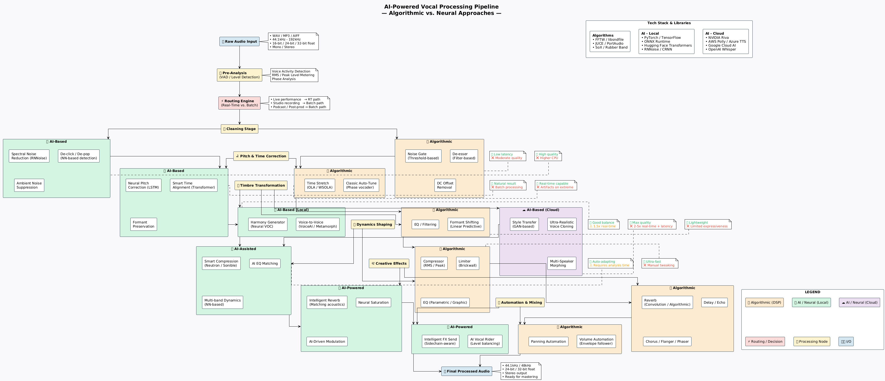

Overview
This project explores the complete vocal processing pipeline — from raw audio input to polished, production-ready vocal tracks. It demonstrates how traditional DSP algorithms and modern AI models can work together, each excelling in their respective domains.
The system intelligently routes audio through either algorithmic or AI-based processing paths based on the use case (real-time performance vs. studio production), ensuring the best balance between quality and latency.
Pipeline Architecture

Key Features
- Intelligent routing between DSP and AI paths based on use case
- Real-time capable algorithmic processing (sub-10ms latency)
- High-quality neural processing for studio production
- Cloud-based ultra-realistic voice cloning and style transfer
- Modular architecture allowing hot-swapping of processing modules
How It Works
The pipeline begins with pre-analysis (VAD and level detection) to prepare the audio. A routing engine then decides whether to process through algorithmic or AI-based paths based on the context (live performance vs. studio production).
Each processing stage (cleaning, correction, timbre, dynamics, effects, automation) can be handled by either traditional DSP or neural approaches. The system uses Transformers for time alignment, LSTM for pitch correction, and GANs for style transfer, all orchestrated through a RAG architecture for intelligent decision-making.
DSP Algorithms
FFT, Phase Vocoder, LPC, Convolution Reverb
Neural Networks
LSTM, CNN, RNN, Transformer, GAN
Cloud Services
NVIDIA Riva, AWS Polly, Azure TTS